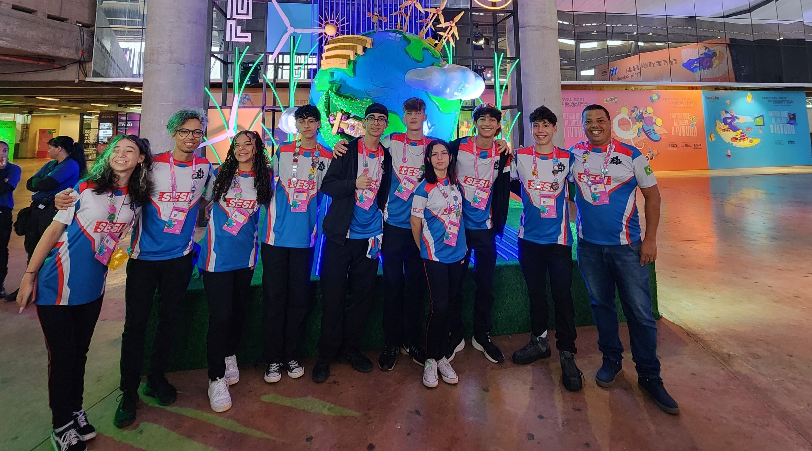

Infraestrutura, desenvolvimento e tecnologia aplicada na prática.
Base Técnica e Evolução Contínua
Minha trajetória profissional combina infraestrutura, redes, desenvolvimento e aplicação prática da tecnologia em ambientes educacionais e corporativos. Busco constantemente evolução técnica, organização de processos e construção de soluções eficientes e bem estruturadas.
Infraestrutura & Redes
Experiência sólida na administração de servidores Linux e Windows, organização de redes corporativas e estruturação de ambientes tecnológicos. Atuação voltada à estabilidade, segurança e eficiência operacional.
Desenvolvimento Web
Ampliação de atuação no desenvolvimento web, com foco em HTML, CSS, JavaScript e boas práticas de estruturação e versionamento de código. Construção de interfaces organizadas, responsivas e funcionais.

Robótica & Tecnologia Aplicada
Integração prática entre software, hardware e desenvolvimento humano. Atuação como técnico e mentor de equipes, promovendo competências técnicas, pensamento lógico e liderança em projetos tecnológicos educacionais.
Tecnologias & Ferramentas
HTML5
CSS3
JavaScript
Python
Git
Linux
Tecnologia além do código
Acredito que compreender infraestrutura, desenvolvimento e aplicação prática permite construir soluções mais completas, estruturadas e eficientes. Meu objetivo é evoluir constantemente e ampliar minha atuação no desenvolvimento de soluções digitais.